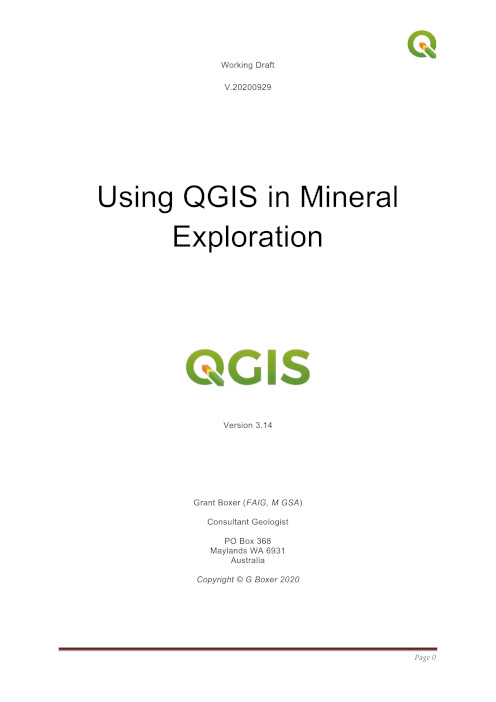

QGIS Training for Geology and the Geosciences
 I have been running QGIS training courses for geologists over the past few years for the Australian Institute of Geoscientists (AIG) and other organisations. As a spin-off of these training courses, I have compiled a user manual for geologists and geoscientists. This is freely available from here here and please feel free to share. The manual is written for version 3.14 and contains information that is not easily located on the web such as plotting rotated structure symbols and using USGS symbols and geological pattern fills. Other sections cover the import and display of geochemical and geophysical data and the selection and processing of remote sensing data such as ASTER and Sentinel 2 images.
For a video introduction to QGIS and to how to use QGIS in geology and mineral exploration, see the video (40 mins) below. I recommend you view it in 1080 pixel resolution if your bandwidth permits. Please note the web site on the video is incorrect.
The official QGIS user manual is available from here.

One of the strengths of QGIS is the ability to utilise external font styles and patterns. Geological symbols and pattern fills from the USGS have been converted to SVG (scaled vector graphics) files. A full description of the USGS patterns and symbols can be found here.
USGS symbols can be found here.
USGS geological patterns can be found here
Other geological pattern files can be found here and here
If you would like to contact me please use email address boxerg at iinet dot net dot au.